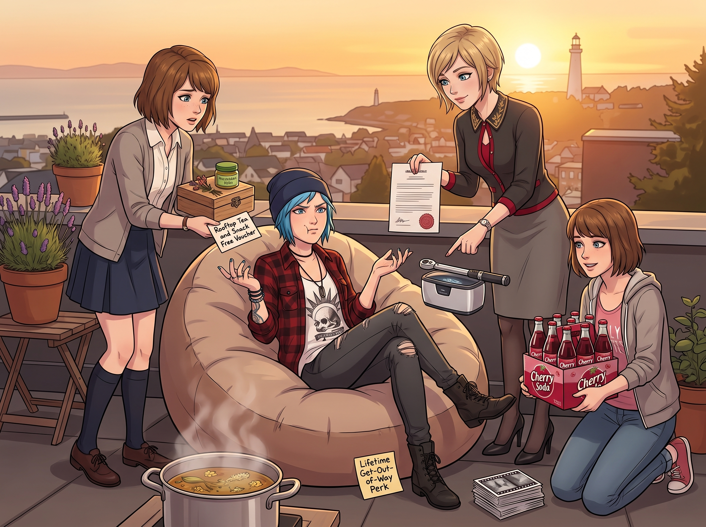

三方賠禮

一、意外爆紅
那本被 Chloe 夾帶了「手部老繭與骨骼紋身」的植物圖鑑,意外在校園和小鎮藝術圈引爆了話題。買家們紛紛讚嘆「將勞動者的粗糙肉身與脆弱植物並置,展現了震撼的生態批判張力」,初版三百冊,半天售罄。
二、耍賴索賠
Chloe 晃著二郎腿,窩在天台的懶人沙發裡,半開玩笑地嚷嚷。
「老娘作為特邀手模,」她一臉理所當然,「沒有出場費和肖像使用費,好歹得拿點精神損失賠償吧?」
沒想到,其餘三人竟罕見地認真起來,一個接一個,遞上了直擊痛點的「賠禮」。
三、Kate 的治癒膏
Kate 率先拿出一隻用乾花裝飾的手工木盒,裡面整齊碼著她親手調配的純天然紫草金盞花修復膏,專治汽修引發的手部乾裂與擦傷。
「這個,」她認真地遞過去,「每天睡前塗一點,能幫妳的手緩解不少。」
她又附上一張手寫的「天台永久茶點免單券」,鄭重承諾:「只要妳想喝,天台隨時為妳煮新鮮的花草茶。」
四、Victoria 的鈦合金授權
Victoria 踩著高跟鞋,優雅地遞上一份蓋著印章的授權轉讓書。
「那套放在莊園車庫裡,」她語氣裡帶著慣常的傲嬌,「德國進口鈦合金扭力扳手和超音波清洗機,永久借用期直接延長為無限期租賃,租金一美元。」
她挑眉補了一句:「別拿妳那些街頭破工具丟人現眼了,拿去把妳的破皮卡修好,別哪天在路上散架。」
五、Max 的終身免死金牌
輪到 Max,她把圖鑑義賣所得裡屬於自己的那部分版稅,全數換成了一大箱 Chloe 最愛的進口櫻桃汽水,和一疊未拆封的黑白膠捲。
同時,她還在皮卡車遮陽板下,塞了一張手繪的「終身免死金牌」:
「憑此券,Maxine Caulfield 承諾永不銷毀妳的碎花裙加油站照片,並擔任妳一輩子的隨車御用攝影師。」
六、罕見的窘迫
原本想敲點竹槓耍賴的 Chloe,抱著滿懷的禮物,罕見地耳根發紅,抓著後腦勺結結巴巴地罵了一句:「妳們這幫瘋女人真是夠了。」
隨後把頭埋進了毛毯裡,不肯讓人看清自己此刻的表情。
七、得寸進尺
窘迫沒維持幾秒,Chloe 從毛毯縫隙裡探出頭來,眼珠一轉,又冒出了新的念頭。
「既然妳們都這麼有誠意,」她試探性地開口,語氣裡帶著蓄謀已久的貪心,「那老娘是不是還能再追加一點賠償?比如說,Max 妳那台哈蘇相機,借我玩三天——」
話音未落,Max 的手已經精準地欺身欺近,俐落地一個翻身動作,把 Chloe 整個人反壓進沙發裡,雙腿夾住她的腰,手指毫不留情地摸向她腰側最怕癢的地方。
「唔啊——」Chloe 猝不及防地慘叫出聲,在沙發上拚命掙扎,「等等!我開玩笑的!」
「開什麼玩笑,」Max 手上的動作絲毫不停,語氣裡帶著危險的笑意,「妳這是得了便宜還賣乖,懂不懂見好就收?」
Kate 和 Victoria 在一旁看著這場鬧劇,忍不住相視而笑,誰都沒有出手阻止。
「投降投降!」Chloe 在沙發上笑得直不起腰,拚命求饒,「老娘知錯了!三份禮物已經夠意思了,不敢再貪心了!」
Max 這才心滿意足地鬆開手,居高臨下地看著她狼狽的模樣,語重心長地補了一句:「知足常樂,懂嗎?」
Chloe 揉著發癢的腰側,喘著氣,把臉重新埋回毛毯裡,含糊不清地嘟囔:「知道了知道了……」
正得意著,Max 一抬頭,忽然對上 Kate 和 Victoria 一臉饒有興味的圍觀表情,瞬間反應過來自己剛才那番「制服行動」全被看在眼裡,臉頰以肉眼可見的速度漲紅。
「這、這個,」她慌忙鬆開還壓在 Chloe 身上的姿勢,語無倫次地想解釋,「我們平常不是這樣的,這只是,呃,偶爾才會,不是每次都——」
「每次都會,」Chloe 從毛毯裡探出頭,一臉「妳看吧」的壞笑,毫不留情地拆穿她,「上次還有更誇張的固技,叫什麼駱駝夾來著?昨天晚上她還——」
「閉嘴!」Max 猛地轉身,一把捂住她的嘴,臉紅得快要滴血,「妳給我閉嘴!」
Victoria 挑眉,饒有興致地看著這場鬧劇,忍不住輕笑出聲:「看來這齣『調教史』,比植物圖鑑還精彩。」
Kate 也跟著抿嘴笑,語氣裡帶著溫柔的調侃:「你們兩個的日常,聽起來還挺豐富多彩的。」
Max 徹底社死,一手還死死捂著 Chloe 的嘴,另一手抱住自己發燙的臉,恨不得原地消失。
Chloe 從她手掌縫隙裡,發出含糊不清、卻依然帶著壞笑意味的笑聲,顯然對這場落井下石的復仇,毫無悔意。
「妳給我等著,」Max 咬牙切齒地低聲威脅,手上的力道又緊了幾分,「回房間再跟妳算帳。」